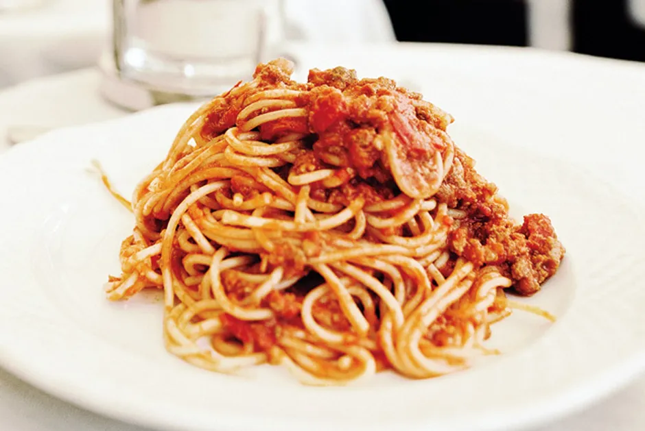

Amatriciana

The Best Pasta You've Never Heard Of
The most incredible pasta we had while in Rome. Simple ingredients. Delightful flavor. Incredible.
Guanciale, Pecorino Romano, Pasta of your choice, Black pepper, and of course - San Marzano Tomatoes
Ingredients
- Guanciale
- Pecorino Romano
- Bucatini
- Black pepper
- San Marzano Tomatoes
Steps
- Cook the pasta n-1 minute for al dente
- Dice the guanciale into 1/4 to 1/2 inch pieces
- Saute the guanciale until golden brown
- Add your grated pecorino cheese, black pepper, and san marzano tomatoes
- Stir until cheese is melted and tomatoes are heated through
- Add pasta to sauce and serve warm